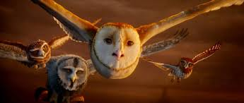

The owls become Guardians when they are much older. They have to be very good to become one. The owls that are guardians are mostly teachers. They teach the chaw that the were chosen for. The guardians also protect the tree. They are also in the council.The council is the group of owls including the king and queen. The are the older and wiser owls. All the guardians are part of the council. However some of the council members are not guardians. Most of the council is guardians. So they make good decisions to protect the tree. The council makes all the major decisions. The king, however makes all the major decisions.